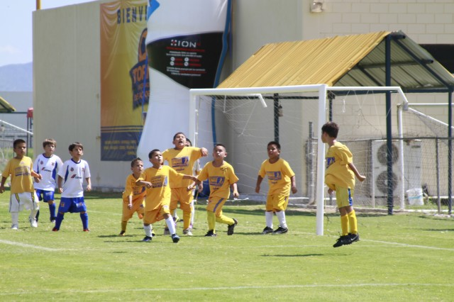

FUERZAS BASICAS
DESDE ACADEMIAS INFERIORES HASTA SUB20, ¡NOSOTROS PREPARAMOS A LOS CAMPEONES!
🐯ACADEMIAS INFERIORES
A todos los padres de familia y niños futbolistas les informamos que los únicos visores autorizados por el Club Tigres son Carlos Guerrero, Raúl González, Rivelino Jiménez, Gerardo Salgado y Gerardo Castilla. Ni el Club, ni sus visores cobran por visoría.
Que promovemos?
Club Tigres promueve el futbol porque refuerza valores como la disciplina, el respeto a las reglas y el trabajo en equipo; favorece la integración familiar, promueve un estilo de vida saludable, aleja a niños y jóvenes de la posibilidad de incurrir en conductas indeseables y los motiva para perseguir sus sueños.
Rol Social
Consciente del rol social del futbol en la formación de niños y jóvenes, Tigres impulsa este deporte a través de las Academias Tigres, localizadas en Nuevo León, en el resto de la República Mexicana y en el estado de Texas, Estados Unidos.
Donde participamos?
Cada verano, estos estudiantes participan en el Torneo Internacional de Academias Tigres, que se celebra en La Cueva y es una oportunidad más para dar a conocer los talentos que pueden ser candidatos a los equipos de Fuerzas Básicas.
Cumplimos los requisitos escenciales
Los centros acreditados por la Institución como parte de las Academias Tigres cumplen con una serie de requisitos relacionados con la capacitación de los entrenadores en esta Institución, la calidad de sus instalaciones y una estructura administrativa adecuada.
Costo
El área de Visorías de Tigres realiza pruebas durante todo el año, sin costo alguno, a los jugadores provenientes de las Academias Tigres.